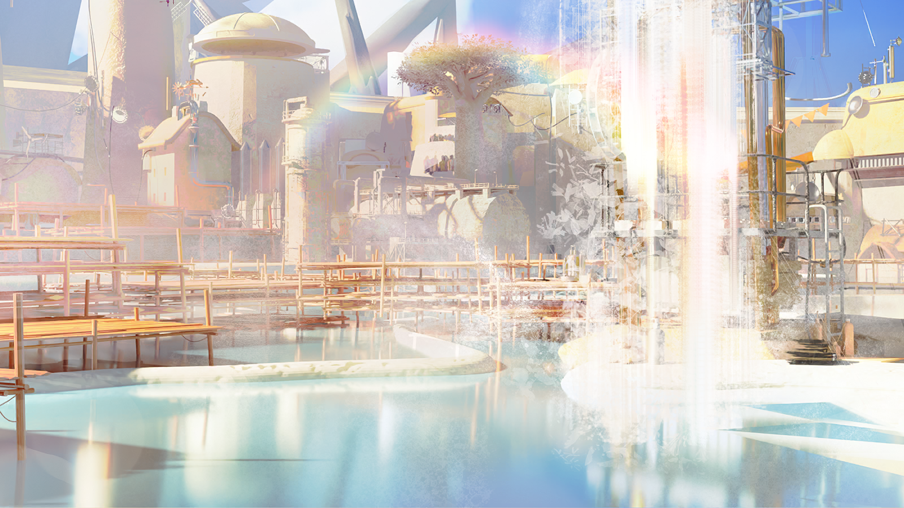
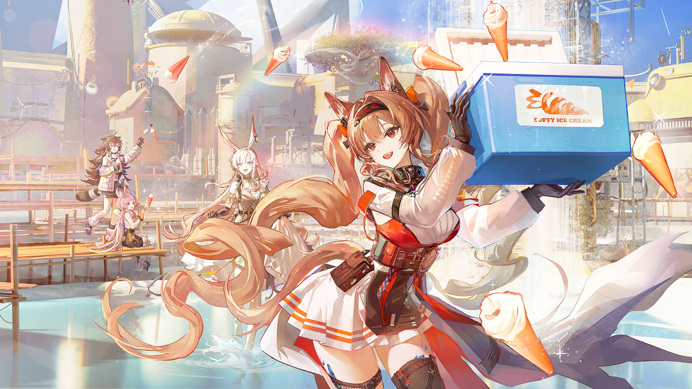
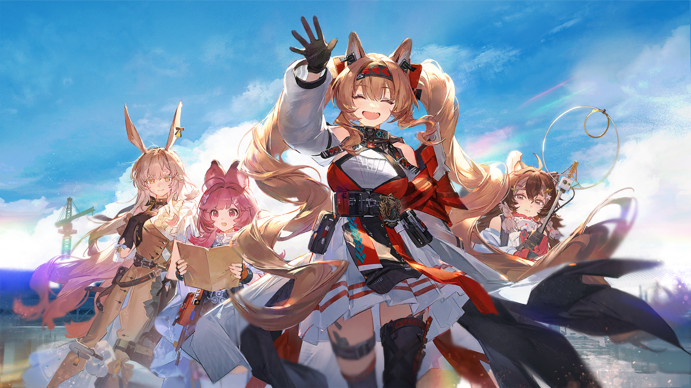

给博士：
我之前其实......没想过要给你写信的。
我是罗德岛的信使，无论在外漂泊多久，我最终都会回去，所以，为什么要给你写信呢？
但我仍然在一踏上回程旅途，从雷姆必拓的南境开始返回终极大铁屯的时刻，就开始给你写这封信了。
去程的事情，我会在行动记录中事无巨细地提及，所以不用担心读不懂......
......可是这样想来，回程的事不也会写在行动记录里面吗？
但我仍然要给你写这封信。因为这趟旅程——无论去程还是回程——都是一段太过愉快的经历，愉快到让人感到遗憾......
......为你不在我们身边而遗憾。
悲观的保镖
先生和夫人在衣帽间里待了多久了？
乐天的司机
急什么。无非又是和核心圈诸国的贸易代表开会而已。
乐天的司机
反正这场会没有坎贝尔夫妇就开不起来，先生和夫人愿意拖就拖着呗，说不定也是谈判策略呢。
悲观的保镖
可我听说那些贸易代表已经开始私下建立攻守同盟了，情况可能没我们想象得那么乐观......
衣帽间里的男声
......我去挑一条领带，好不好......
衣帽间里的男声
这条动物的实在是......
乐天的司机
你看，还挑领带呢，根本就不着急。
悲观的保镖
动物图案的？先生从来没打过动物图案的领带，该不会是某种暗号......情况有变？
衣帽间里的女声
......她当年就想看你系这条领带，你当时也是用这句话把她打发了......
乐天的司机
“她”？
悲观的保镖
“当年”？
乐天的司机和悲观的保镖都不说话了。两人虽然没有离开原位，却都竖起了耳朵，使劲捕捉衣帽间里传来的每一丝语音。
衣帽间里的男声
......可你至少也在外面给我留点面子......
衣帽间里的女声
......这件事不解释清楚，就别怪我一点面子都不给你！
衣帽间里的男声
我会道歉的，我真的会道歉的，但这条动物领带还是——
衣帽间里的男声
好好好......
悲观的保镖
先生、夫人！如果都准备好了，我们就前往大铁屯会议中心——
优雅的夫人
大铁屯会议中心？
悲观的保镖
不、不是吗？
乐天的司机
夫人，恕我直言，就算这次的贸易代表里有，呃，跟先生之前有因缘的人，也不好因私废公——
严厉的先生
啊？我们要去看嘉辛塔和她的朋友们，你们在说什么？
乐天的司机
嘉辛塔？那这条领带......
优雅的夫人
他第一次送嘉辛塔去疗养院之前，嘉辛塔就想看他系这条领带，结果他用一句“太不庄重”把嘉辛塔打发了。
优雅的夫人
之前嘉辛塔在大铁屯的事迹你们想必也听说了，利亚姆·坎贝尔接下来要去给他的女儿接风，顺带道歉。
悲观的保镖
原来是这样......
优雅的夫人
现在，先生们，轮到你们向我解释，刚刚那些“有因缘的人”“因私废公”是什么意思了。

活泼的女孩
爸爸爸爸，那个柜子上是不是多了什么东西呀？

愉快的矿工
就数你眼尖。那是今年击球大赛的照片，要我给你取下来看看吗？

活泼的女孩
好呀！
活泼的女孩
照片上是......四个穿得很漂亮的姐姐？
活泼的女孩
爸爸，她们为什么不穿工服呀？
愉快的矿工
因为她们本来也不是太阳谷的矿工，她们是来帮忙修通讯塔，顺带参加击球大赛的。
活泼的女孩
那通讯塔修好了吗？
愉快的矿工
修好了呀。不光修好了，她们还在矿井下面救了个人出来呢。
活泼的女孩
姐姐们太了不起了！那她们击球大赛得了第几名呀？她们得了冠军吗？
愉快的矿工
哼哼......修塔和救人先不说，要在击球场上击败你爸爸我？她们还嫩着呢！

愉快的矿工
这才是今年的冠军奖杯，爸爸赢过来的！怎么样，好不好看？想不想要？

活泼的女孩
爸爸坏！爸爸不让姐姐们得冠军！
愉快的矿工
不是，这是比赛——
活泼的女孩
我要这张照片嘛！
愉快的矿工
小祖宗你等等，可别把照片弄坏了。我去问问胶卷在谁手里，什么时候再洗一张......

太阳谷维修员
刚刚塔妮她们来了，要找大家聚一聚，参加了击球大赛的人都去了，就差你一个人啦。

愉快的矿工
这不是巧了吗？走走走，爸爸带你找姐姐们合影去！
太阳谷维修员
说起来，其他人还问联络员先生在不在呢。
愉快的矿工
他？他可能去不了吧。通讯塔修好之后他出去跑生意，好像真的出了场不大不小的车祸，回总部疗养来了。

太阳谷联络员
巴顿先生在吗？我好得差不多了，可不可以结束疗养——
活泼的女孩
呀，联络员先生！
愉快的矿工
唔，你好了呀。走，我们一起！

太阳谷联络员
一、一起去干嘛？！
活泼的女孩
参加击球大赛的人都去了，联络员叔叔也去！

太阳谷联络员
击球大赛？！

太阳谷联络员
哎呦呦呦呦呦呦呦......

塔妮父亲
喝了这么多天，每次喝你们的胡萝卜酿我都在想，你们这儿的胡萝卜是真好。
巴尼特
可不是嘛。糖度高，不爱坏，风味好......拿来晾胡萝卜干也太可惜了！
好事的村民
这不是村里没那么多能喝酒的人嘛！
好事的村民
正巧我还想问你们呢，你们大涌泉镇缺不缺胡萝卜酿？要是能互通有无——
塔妮父亲
这么好的胡萝卜酿，雷姆必拓哪里不缺？

好事的村民
好！太好了！喝！
巴尼特
喝！
塔妮父亲
喝——

塔妮母亲
停！

塔妮父亲
麦迪森，生意谈到一半，马上就好，就一小会儿——

塔妮母亲
生意？和塔妮一起来的三个小姑娘已经把生意谈好啦。

塔妮父亲
连这都比我快一步？！

塔妮母亲
一周前坎贝尔家的小姑娘就已经联系了附近的冰淇淋工厂，洋蓟村的特产就要变成胡萝卜筒冰淇淋了。
塔妮母亲
现在胡萝卜筒冰淇淋的试产已经完成，她们已经先上路啦。
塔妮父亲
啊？那我让塔妮带的照片？
塔妮母亲
等你回家才能看到了！走了！
塔妮父亲
你别揪我耳朵——我妈当年就是老揪我耳朵，才把我耳朵揪这么长的！我一直觉得我妈的短耳朵好——
塔妮母亲
你耳朵哪里长了？你们仨的耳朵都是一个模子刻出来的！
乌露露
特大喜讯，特大喜讯！
乌露露
经由阿梅利亚小姐的修理，大涌泉镇的远程通讯现已恢复！
乌露露
因此，现在由本人，“引领者”乌露露，经由“泰拉重生之后”电台，给大涌泉镇的各位带来一则特大喜讯！

嘉辛塔
哇，乌露露的声音还是这么大......

阿梅利亚
我、我其实已经按你说的，偷偷调过她电台的音量了，根本没用，为什么啊......

玛蒂娜
因为这样一来她就会以为是自己声音不够大了。

嘉辛塔
不愧是玛蒂娜女士......我根本没想到这一点......

塔妮
呜哇，温泉都震起波纹了......
乌露露
为了庆祝大涌泉镇恢复远程通讯！
乌露露
也为了庆祝安洁莉娜、塔妮、嘉辛塔、阿梅利亚顺利从南境回归！
乌露露
大涌泉镇现在特开展冰淇淋免费派送活动！最新研发的胡萝卜筒冰淇淋，将在整个大涌泉镇免费派送！
乌露露
大家一定好奇，冰淇淋该如何免费派送对不对？
乌露露
让我们欢迎来自罗德岛的源石技艺大师，操纵重力的——安洁莉娜！安心院安洁莉娜小姐！
乌露露
然后......在颠倒的重力之下——为胡萝卜筒冰淇淋——欢呼吧！

阿梅利亚
说得那么大张旗鼓，可我们只有这么一箱啊......

塔妮
嗐，怕什么，话都说出去了，先上再说！再等下去，温泉的热气都要渗到冰淇淋箱里了！
塔妮
安洁莉娜！
安洁莉娜
好嘞！

安洁莉娜打开手中的保温箱——
胡萝卜筒冰淇淋一个又一个地从箱里飞出，在温泉氤氲的蒸汽中蹦跳起来。

在冰淇淋的诱惑之下，长耳朵的卡特斯情不自禁地跳入温泉之中。
短耳朵的卡特斯原本也想下水，却发觉身旁的阿纳缇拿在手里的冰淇淋被什么小东西叼走了——
塔妮
欸？为什么你的“小飞虫”会抢你的冰淇淋？
阿梅利亚
那个不是“小飞虫”，那个是——呃，很难解释啊，呜......
塔妮
欸，不是“小飞虫”吗？我一直以为那个是羽兽形态的重装小飞虫，你的终极武器之类的......
塔妮
不好解释就先放一放！来，我手头的这个冰淇淋给你！
而之前被乌露露的超大音量广播震回家里的镇民，还有来疗养的感染者们，也纷纷从为了隔音紧闭的门扉里探出头来，而后飞奔出门。
安洁莉娜
玛蒂娜，不一起来吗？
玛蒂娜
我的口味和你比较像，对胡萝卜没那么感冒——你也是因为这个才主动要求来当派送员的吧？
安洁莉娜
嘿嘿......
安洁莉娜
要是一撮毛也在这里就好了。让它帮忙派送冰淇淋，说不定能让更多人真正认识这种可爱的生物......
玛蒂娜
说到有袋鼷兽，你知道那个有袋鼷兽被人敲了脑袋，结果长出绒毛躲去南境的故事吗？
安洁莉娜
嗯，塔妮跟我讲过。
玛蒂娜
这个故事还有下半截，你知道吗？
安洁莉娜
下半截？
玛蒂娜
据说在很久很久之后，在说出口的话会在转瞬之间到达千里之外，人们已经忘却了什么叫说不出口的时候......
玛蒂娜
会有一只有袋鼷兽离开它们代代居住的南境。
玛蒂娜
它无论如何都想重新学会阅读和聆听，因此，它会寻找一位与多年前那个雷姆必拓人同样勇敢的信使。
玛蒂娜
一人一兽会重新踏上旅途，但这次不是为了传信，而是传递那些被又多又杂乱的话语蒙蔽的，真正的心意......
安洁莉娜
难道您是想说，一撮毛就是那只有袋鼷兽？可它现在已经回到了南境，和它的爸爸妈妈团聚了呀。
安洁莉娜
......这个故事该不是您现编出来逗我开心的吧？
玛蒂娜
哈哈，故事总有添油加醋的成分，可谁又能说故事背后一定没有一个真实的原型呢？
安洁莉娜
真是的......
玛蒂娜
与其纠结故事的真伪，不如先享受这一刻吧。我给你拍个照片！来，笑一个——
是的，博士，就是这样一趟愉快的旅途。
不光是这张照片承载的场景，也不光是前面的文字记叙的欢乐。
每一次重逢都让人感到温暖，每一次再见都指向新的可能。
哪怕离别仍然近在眼前——
——不，请别误会，我说的是，玛蒂娜婉拒了来罗德岛的邀请......
她给我看了一封没有收件人，也没有寄件人的信。
她说，和我共同走过这段旅途之后，她忽然又生出了一些额外的勇气，去解决这个困扰她许久的问题......
......于是，她在离开雷姆必拓之后，在荒地上告别了我们。
在那之后，我们又解决了一些问题。
阿梅利亚和嘉辛塔敲定了拉特兰作为创业的起点，跟他们的枢机聊了一整个下午。
塔妮一路勘测地形，已经为大涌泉镇的镇民找好了三四处潜在可移居的地点，唯一的问题是这些地方好像都在公认的雷姆必拓境外。
而我......我想了很多很多事情。
已经发生的，正在发生的，尚未发生的......
许多事情我还想不清楚，但唯独在那封信中向玛蒂娜提出的问题，我已经有了答案。
我是罗德岛的信使安洁莉娜。
在你需要我的时候，我会像你当时为我伸出援助之手一样，坚定地站在你的身边。
呼......
......想说的话还有很多，但这张信纸已经被我写满，连个落款的地方都没有了。
但是没关系。
从我想说的话挤满了信纸，再也写不下一个字的那一刻起——
——我就会向你飞奔而来。
PLAYER CHOICE // 玩家选项
[1]那么......
【以下剧情 · 对应上述任一选项后的接续】

明媚的日光下，信使的朋友们好奇地看向你。
一路上，她们已经从安洁莉娜的口中听过你的许多事迹。
不光是在晶簇前消沉的她，还有在南境的帐篷里努力入睡的她，看着地图计算距离的她，在归途的风中哼歌的她......
她总会不经意地提起你，在三人心中激起一次又一次想象。
而今，你终于站在了她们面前。
安洁莉娜
这位耳朵短短的卡特斯是塔妮，她是大涌泉镇的探路者，是个了不起的探险家！
安洁莉娜
这位耳朵长长的卡特斯是嘉辛塔，这位阿纳缇是阿梅利亚！
安洁莉娜
阿梅利亚是很厉害的通讯技术专家，梦想是连接整片大地，而嘉辛塔是她的投资人！
安洁莉娜
各位，这位就是博士，罗德岛的博士！
你微笑着对着她们点头致意。
就算隔着兜帽，她们显然也感受到了你的善意，就连最容易紧张的阿梅利亚也明显松弛下来。
介绍完后，从旅途归来的信使送给你一个笑容......
一个你之前未在那张脸上见过的，比日光还要灿烂的笑容。
安洁莉娜
博士，我回来了！
PLAYER CHOICE // 玩家选项
[1]欢迎回来，安洁莉娜。
【以下剧情 · 对应上述任一选项后的接续】